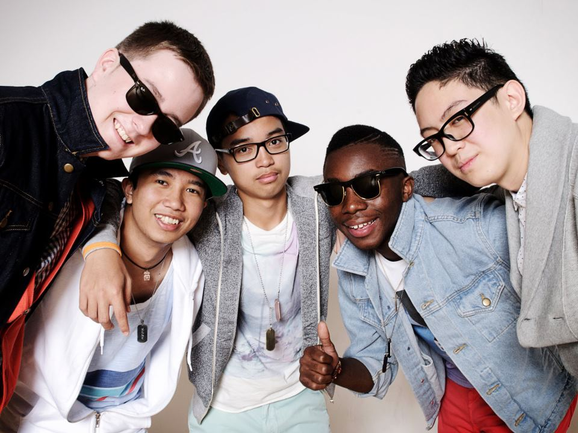
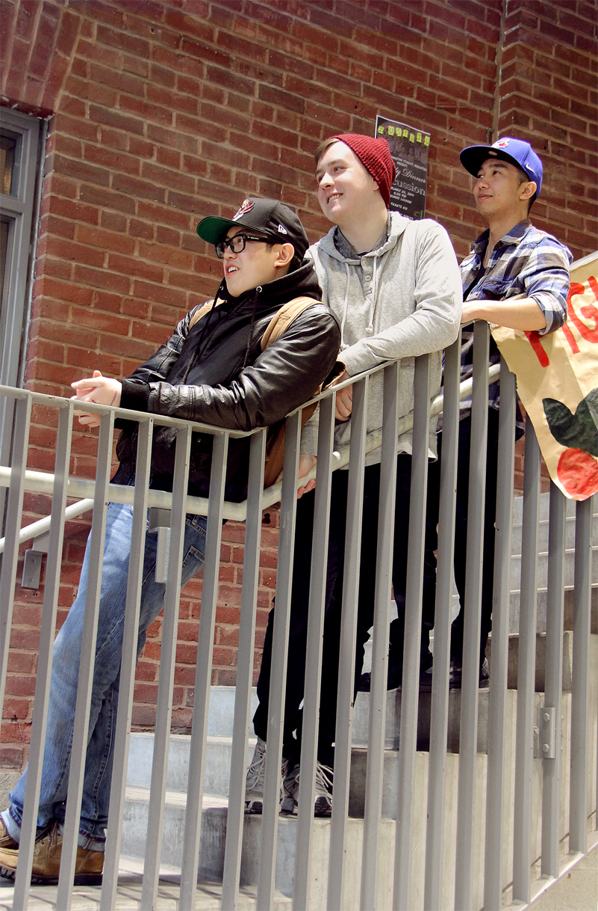

By: Edith Nataprawira
Uploaded on March 2, 2014
Have you ever thought about the sheer number of people we encounter in our lifetime? Walking down a street in a city as populated and diverse as Toronto, we can bypass a hundred moving bodies without so much as a glance.
But sometimes you’re lucky and out of the masses, you make a friend for life.
Other times, you’re four times lucky.
That was the case for a quintet called DiverseCity, a homegrown Toronto band with lead singer Paulo Amor, lead guitarist/bassist Ryan McCollom, keyboardist/bassist Niño Torres, rapper Why Jay E, and drummer/guitarist JJ Javier.
Their band came together haphazardly two years ago. Amor and Why Jay E had posted their audition for Canada’s Got Talent on Youtube and had gotten a good response. Then, just five days before show, Torres joined, Javier started drumming along, and McCollom stepped in as bass player. All of them had known each other since high school and fit seamlessly into the band.
19-year-old McCollom is the only Ryerson student in the band, and is completing his undergraduate degree in the Creative Industries program. Amor is taking a gap year to focus on his music, but plans to apply for the Music Industries program at Centennial College. Likewise, Torres is also taking a year off. Why Jay E, 19 years old is pursuing International Studies at Centennial and Javier, the youngest at 17 years of age, is finishing high school with hopes of pursuing music in post-secondary.
All of these paths intersect within DiverseCity.
Like their band name suggests, their music is a mix of genres. DiverseCity plays Rock, Hip-Hop, R&B and Pop music. They also do covers of popular songs and post them on Youtube.
Much of their charisma was honed by experience. They’ve played a number of gigs for a variety of audiences. One of their most memorable experiences as a band was at a New Year’s Concert in Collingwood.
They had been invited to play as guests in the only New Year’s Concert for an audience of several hundred. However, one night before the show, the headliners cancelled and when they stepped out to perform, there were more staff members than actual audience members. McCollom, Amor and Torres retell the event with amusement.
“In the end I would say it was a great experience,” McCollom laughs.
Whether it’s for seven people or several hundred, DiverseCity always plays for the audience.
“On stage, you gotta interact with the audience because they’re the ones that are coming to your show, so you’re the one that has to make them forget about all the things that they’re thinking about,” Amor explains.
Listening to them talk, I was impressed by their camaraderie, enthusiasm, and desire to perform. There was a hunger in them (which wasn’t related to their other shared-hobby: eating food).
When they dream, they dream big. Paulo hopes to be a songwriter one day with an apartment in Toronto or New York and, of course, his band of brothers beside him.

Spotlight Editor in Chief
Vjosa Isai
vjosa.isai@ryerson.ca
Want to get your time under the lights? Are you a writer looking to join the Artist Spotlight initiative? E-mail us at music@ryerson.ca to see how!